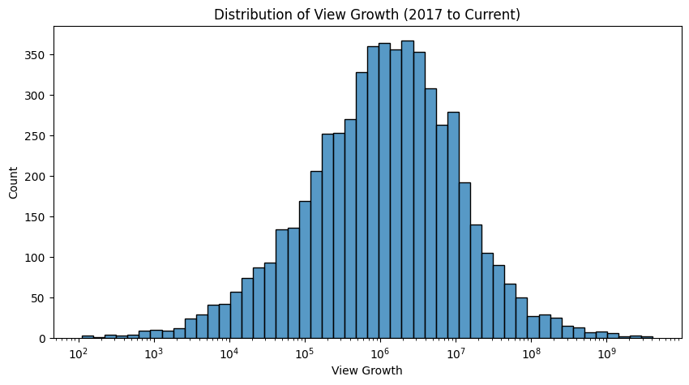
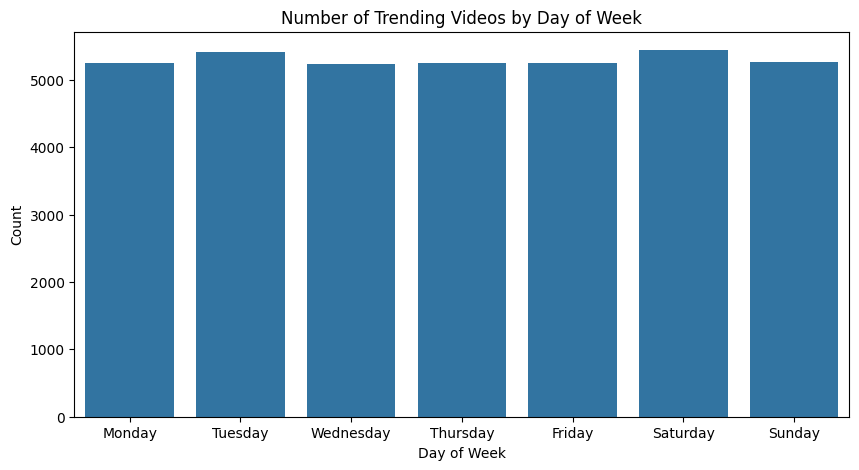
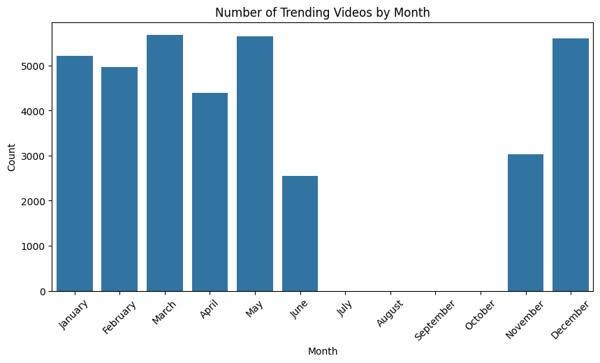
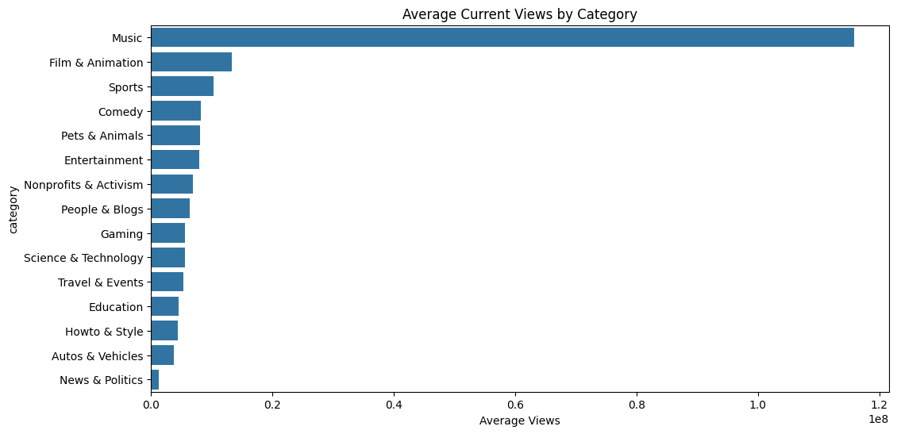
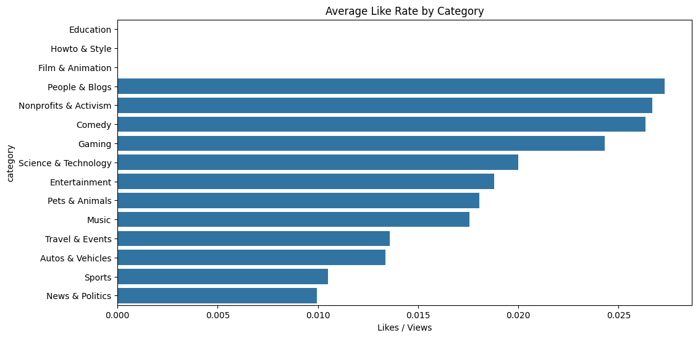
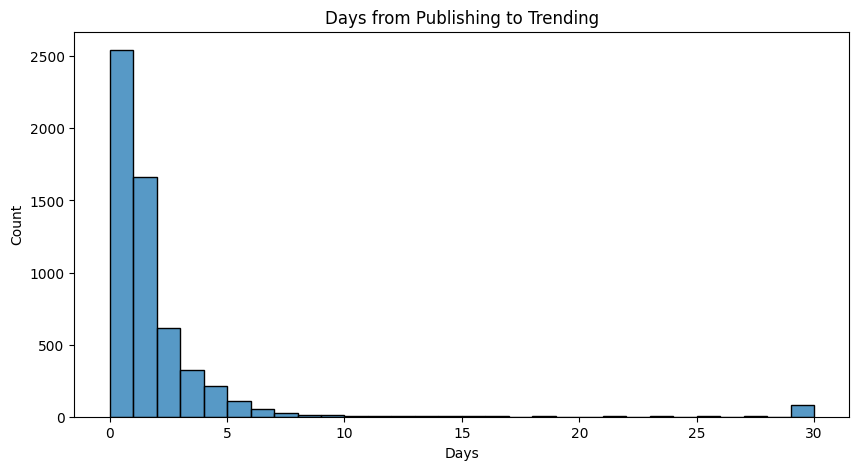

# Get unique video IDsvideo_ids = df_kaggle["video_id"].dropna().unique().tolist()# Fetch in batches of 50rows = []for i inrange(0, len(video_ids), 50): batch = video_ids[i:i+50] request = youtube.videos().list( part="snippet,statistics",id=",".join(batch) ) response = request.execute()for item in response["items"]: rows.append({"video_id": item["id"],"title": item["snippet"]["title"],"channel": item["snippet"]["channelTitle"],"published": item["snippet"]["publishedAt"],"views": int(item["statistics"].get("viewCount", 0)),"likes": int(item["statistics"].get("likeCount", 0)),"comments": int(item["statistics"].get("commentCount", 0)), })df_api = pd.DataFrame(rows)print(df_api.shape)print(df_api.head())
(5688, 7)
video_id title \
0 2kyS6SvSYSE WE WANT TO TALK ABOUT OUR MARRIAGE
1 1ZAPwfrtAFY The Trump Presidency: Last Week Tonight with J...
2 puqaWrEC7tY Nickelback Lyrics: Real or Fake?
3 d380meD0W0M I Dare You: GOING BALD!?
4 gHZ1Qz0KiKM 2 Weeks with iPhone X
channel published views likes comments
0 CaseyNeistat 2017-11-13T17:13:01Z 2983324 102173 20018
1 LastWeekTonight 2017-11-13T07:30:00Z 23211539 262948 22449
2 Good Mythical Morning 2017-11-13T11:00:04Z 1451231 21714 3199
3 nigahiga 2017-11-12T18:01:41Z 5056099 190747 22322
4 iJustine 2017-11-13T19:07:23Z 2190573 37697 3271
df = pd.merge(df_kaggle, df_api, on="video_id", how="inner")print(df.shape)print(df.columns.tolist())# Little note: This is actually really interesting — # you can compare 2017 view/like counts (kaggle) vs current counts (API) to see how# much videos have grown.
# Null and type checkprint(df.dtypes)print(df.isnull().sum())
# Cleaning: Convert formats of dates to datetime objectsdf["trending_date"] = pd.to_datetime(df["trending_date"], format="%y.%d.%m")df["publish_time"] = pd.to_datetime(df["publish_time"])df["published"] = pd.to_datetime(df["published"])print(df[["trending_date", "publish_time", "published"]].dtypes)print(df[["trending_date", "publish_time", "published"]].head())
# EDA on growth: how much have views/likes grown from 2017 to now?# Growth Analysisdf["view_growth"] = df["views_current"] - df["views_2017"]df["like_growth"] = df["likes_current"] - df["likes_2017"]df["comment_growth"] = df["comments_current"] - df["comments_2017"]print(df[["title", "view_growth", "like_growth", "comment_growth"]].describe())# Top 10 most grown videosprint(df[["title", "view_growth"]].sort_values("view_growth", ascending=False).head(10))# Visualize view growth distributionplt.figure(figsize=(10, 5))sns.histplot(df["view_growth"], log_scale=True, bins=50)plt.title("Distribution of View Growth (2017 to Current)")plt.xlabel("View Growth")plt.show()
The average video gained about 22.7 million views since 2017 The median (50%) is 1.6 million — meaning most videos grew modestly, but a few viral videos are pulling the mean way up Some videos have negative growth (min is -12 million) — this happens when the Kaggle data captured a video at its peak viral moment and views were later removed or the count was corrected by YouTube Ed Sheeran’s “Perfect” and Maroon 5’s “Girls Like You” dominate — both gained 4 billion+ views since 2017 You’re seeing the same video multiple times because the Kaggle dataset has duplicate rows for videos that trended on multiple days (deduplicating below)
# Deduplicating the videos df_unique = df.drop_duplicates(subset="video_id")print(df_unique[["title", "view_growth"]].sort_values("view_growth", ascending=False).head(10))plt.figure(figsize=(10, 5))sns.histplot(df_unique["view_growth"], log_scale=True, bins=50)plt.title("Distribution of View Growth (2017 to Current)")plt.xlabel("View Growth")plt.show()
# EDA on trending patterns: what days/months had the most trending videos?# Trending Patternsdf["day_of_week"] = df["trending_date"].dt.day_name()df["month"] = df["trending_date"].dt.month_name()# Videos trending by day of weekplt.figure(figsize=(10, 5))day_order = ["Monday", "Tuesday", "Wednesday", "Thursday", "Friday", "Saturday", "Sunday"]sns.countplot(data=df, x="day_of_week", order=day_order)plt.title("Number of Trending Videos by Day of Week")plt.xlabel("Day of Week")plt.ylabel("Count")plt.show()# Videos trending by monthplt.figure(figsize=(10, 5))month_order = ["January","February","March","April","May","June","July","August","September","October","November","December"]sns.countplot(data=df, x="month", order=month_order)plt.title("Number of Trending Videos by Month")plt.xlabel("Month")plt.ylabel("Count")plt.xticks(rotation=45)plt.show()
What we see:
Day of Week: Trending videos are almost perfectly evenly distributed across all 7 days — about 5,200-5,400 per day. This means YouTube’s trending algorithm doesn’t really favor any particular day of the week. Not super interesting but good to know Month: This one is more telling. The dataset only covers November 2017 through June 2018 — that’s why July through October are completely empty. Within the data you have:
March and May are the peak months (~5,600 trending videos each) June drops off sharply (~2,500) because the dataset ends partway through June November is lower (~3,000) because the dataset starts partway through November
So the monthly pattern is mostly reflecting the coverage of the dataset rather than a true seasonal trend. Worth noting that caveat in your project writeup!
# EDA on Category: which categories get the most views/engagement?category_map = {1: "Film & Animation", 2: "Autos & Vehicles", 10: "Music",15: "Pets & Animals", 17: "Sports", 19: "Travel & Events",20: "Gaming", 22: "People & Blogs", 23: "Comedy",24: "Entertainment", 25: "News & Politics", 26: "Howto & Style",27: "Education", 28: "Science & Technology", 29: "Nonprofits & Activism"}df["category"] = df["category_id"].map(category_map)# Views by categoryplt.figure(figsize=(12, 6))cat_views = df.groupby("category")["views_current"].mean().sort_values(ascending=False)sns.barplot(x=cat_views.values, y=cat_views.index)plt.title("Average Current Views by Category")plt.xlabel("Average Views")plt.show()
What we see:
Music dominates by a massive margin averaging over 1.1 billion views per video, which is roughly 10x more than the next category (Film & Animation at ~130 million). This makes total sense given what we saw in the growth analysis — the top growers were all music videos like Ed Sheeran and Maroon 5. The rest of the categories are fairly close to each other, all under 200 million average views. A few interesting notes:
News & Politics is dead last — news videos get views quickly but don’t have long term staying power like music does Sports comes in 3rd which is surprising given it’s often considered time-sensitive content Gaming is lower than you might expect given how big YouTube gaming is
# EDA on engagement: ratio, comment ratio by channel or category?df_unique["category"] = df_unique["category_id"].map(category_map)df_unique["like_rate"] = df_unique["likes_current"] / df_unique["views_current"]df_unique["comment_rate"] = df_unique["comments_current"] / df_unique["views_current"]# Like rate by categoryplt.figure(figsize=(12, 6))cat_likes = df_unique.groupby("category")["like_rate"].mean().sort_values(ascending=False)sns.barplot(x=cat_likes.values, y=cat_likes.index)plt.title("Average Like Rate by Category")plt.xlabel("Likes / Views")plt.show()
#What we see: Music gets the most views but not the most engagement it sits in the middle for like rate at about 1.8%. The standouts: People & Blogs has the highest like rate (~2.8%) — these are personal/creator channels where audiences are highly loyal and engaged Nonprofits & Activism and Comedy are close behind — content that resonates emotionally drives more active engagement Education, Howto & Style, and Film & Animation are near zero which looks suspicious — likely a data issue with very few videos in those categories skewing the result News & Politics and Sports are lowest which makes sense — people watch but don’t necessarily like
The key takeaway for your project: views and engagement are different things. Music wins on scale, but smaller creator-driven categories win on audience loyalty.
# Time, Trend: how long after publishing does a video start trending# Time to Trenddf_unique["time_to_trend"] = (df_unique["trending_date"] - df_unique["publish_time"].dt.tz_localize(None)).dt.daysprint(df_unique["time_to_trend"].describe())plt.figure(figsize=(10, 5))sns.histplot(df_unique["time_to_trend"].clip(0, 30), bins=30)plt.title("Days from Publishing to Trending")plt.xlabel("Days")plt.show()
#What we see: Most videos trend within the first 2-3 days of being published, the spike at day 0-1 is huge, meaning YouTube’s algorithm picks up viral content almost immediately after upload. After day 5 it drops off dramatically, and by day 10 almost nothing is trending for the first time. The small bump at day 30 on the right is an artifact of the .clip(0, 30) — that bar represents all videos that took longer than 30 days to trend, lumped together at the 30 mark. There are a handful of those, likely older videos that got a second life from being referenced or shared. What did the describe() print? That’ll tell us the exact median and mean. But overall the takeaway for your project is: if a video doesn’t trend within a week of publishing, it almost certainly won’t trend at all.
from cleaning import run_cleaning_pipelinedf = run_cleaning_pipeline()
from final_project_demo import run_cleaning_pipeline, run_analysis_pipelinedf = run_cleaning_pipeline()run_analysis_pipeline(df)
Running cleaning pipeline...
Done! Shape: (37095, 20)
Running analysis pipeline...
view_growth like_growth comment_growth
count 5.687000e+03 5.687000e+03 5.687000e+03
mean 1.542200e+07 1.465200e+05 6.166925e+03
std 1.177719e+08 8.550703e+05 6.674916e+04
min -3.979200e+05 -1.193200e+04 -1.205350e+05
25% 2.437575e+05 2.801500e+03 3.100000e+01
50% 1.200046e+06 1.628800e+04 5.110000e+02
75% 4.824178e+06 7.050250e+04 2.524500e+03
max 4.107027e+09 2.887934e+07 3.754179e+06
title view_growth
58 Ed Sheeran - Perfect (Official Music Video) 4107026898
34360 Maroon 5 - Girls Like You ft. Cardi B 3996201082
534 Luis Fonsi, Demi Lovato - Échame La Culpa 2499360779
28348 Billie Eilish - lovely (with Khalid) 2404734021
27051 Becky G, Natti Natasha - Sin Pijama (Official ... 2312566329
34181 Cardi B, Bad Bunny & J Balvin - I Like It [Off... 1724696009
1976 BTS (방탄소년단) 'MIC Drop (Steve Aoki Remix)' Offi... 1550604361
9560 Calum Scott - You Are The Reason (Official) 1355769373
32200 BTS (방탄소년단) 'FAKE LOVE' Official MV 1339899300
27052 Ariana Grande - No Tears Left To Cry 1286346206
/Users/summerprice/Desktop/WINTER_26/STAT_386/final_project386/src/final_project_demo/analysis.py:18: SettingWithCopyWarning:
A value is trying to be set on a copy of a slice from a DataFrame.
Try using .loc[row_indexer,col_indexer] = value instead
See the caveats in the documentation: https://pandas.pydata.org/pandas-docs/stable/user_guide/indexing.html#returning-a-view-versus-a-copy
df_unique["view_growth"] = df_unique["views_current"] - df_unique["views_2017"]
/Users/summerprice/Desktop/WINTER_26/STAT_386/final_project386/src/final_project_demo/analysis.py:19: SettingWithCopyWarning:
A value is trying to be set on a copy of a slice from a DataFrame.
Try using .loc[row_indexer,col_indexer] = value instead
See the caveats in the documentation: https://pandas.pydata.org/pandas-docs/stable/user_guide/indexing.html#returning-a-view-versus-a-copy
df_unique["like_growth"] = df_unique["likes_current"] - df_unique["likes_2017"]
/Users/summerprice/Desktop/WINTER_26/STAT_386/final_project386/src/final_project_demo/analysis.py:20: SettingWithCopyWarning:
A value is trying to be set on a copy of a slice from a DataFrame.
Try using .loc[row_indexer,col_indexer] = value instead
See the caveats in the documentation: https://pandas.pydata.org/pandas-docs/stable/user_guide/indexing.html#returning-a-view-versus-a-copy
df_unique["comment_growth"] = df_unique["comments_current"] - df_unique["comments_2017"]




/Users/summerprice/Desktop/WINTER_26/STAT_386/final_project386/src/final_project_demo/analysis.py:73: SettingWithCopyWarning:
A value is trying to be set on a copy of a slice from a DataFrame.
Try using .loc[row_indexer,col_indexer] = value instead
See the caveats in the documentation: https://pandas.pydata.org/pandas-docs/stable/user_guide/indexing.html#returning-a-view-versus-a-copy
df_unique["category"] = df_unique["category_id"].map(category_map)
/Users/summerprice/Desktop/WINTER_26/STAT_386/final_project386/src/final_project_demo/analysis.py:74: SettingWithCopyWarning:
A value is trying to be set on a copy of a slice from a DataFrame.
Try using .loc[row_indexer,col_indexer] = value instead
See the caveats in the documentation: https://pandas.pydata.org/pandas-docs/stable/user_guide/indexing.html#returning-a-view-versus-a-copy
df_unique["like_rate"] = df_unique["likes_current"] / df_unique["views_current"]
/Users/summerprice/Desktop/WINTER_26/STAT_386/final_project386/src/final_project_demo/analysis.py:75: SettingWithCopyWarning:
A value is trying to be set on a copy of a slice from a DataFrame.
Try using .loc[row_indexer,col_indexer] = value instead
See the caveats in the documentation: https://pandas.pydata.org/pandas-docs/stable/user_guide/indexing.html#returning-a-view-versus-a-copy
df_unique["comment_rate"] = df_unique["comments_current"] / df_unique["views_current"]

/Users/summerprice/Desktop/WINTER_26/STAT_386/final_project386/src/final_project_demo/analysis.py:88: SettingWithCopyWarning:
A value is trying to be set on a copy of a slice from a DataFrame.
Try using .loc[row_indexer,col_indexer] = value instead
See the caveats in the documentation: https://pandas.pydata.org/pandas-docs/stable/user_guide/indexing.html#returning-a-view-versus-a-copy
df_unique["time_to_trend"] = (df_unique["trending_date"] - df_unique["publish_time"].dt.tz_localize(None)).dt.days
count 5687.000000
mean 19.877616
std 200.107527
min -1.000000
25% 0.000000
50% 1.000000
75% 2.000000
max 3562.000000
Name: time_to_trend, dtype: float64

Analysis complete!
# Actual Analysis# 1 — Predicting view count# Can you predict how many views a video will get based on likes, comments, category, and time to trend? # 2 — What features predict a video trending quickly?# Use regression to predict time_to_trend based on category, publish time, likes, etc.# "what makes a video trend fast?"# 3 — View growth over time# Model how much a video grows from 2017 to now based on its category and initial engagement.
Key Insights: R² of 0.679 — the model explains about 68% of the variance in current views. That’s pretty decent for social media data which is inherently noisy MAE of 0.962 (log scale) — on average the model’s predictions are off by about 0.96 in log scale, which translates to roughly being off by a factor of 2.6x in actual views. Not bad given how unpredictable virality is. Feature importances:
likes_2017 is by far the most important feature at 71% — early likes are the strongest signal of long term success dislikes and comments_2017 are roughly equal at ~10% each — engagement in general matters, even negative engagement category_id contributes about 8% — the type of content matters but less than engagement comments_disabled and ratings_disabled are nearly irrelevant
Key insight: early engagement (especially likes) is the strongest predictor of a video’s long term view count. videos that people engage with early get boosted by YouTube’s algorithm. Pretty intuitive.
R² of 0.274 — the model explains about 27% of the variance in time to trend. This is lower than Option 1, which actually makes sense — how quickly a video trends is harder to predict than its long term views. There’s a lot of randomness in what YouTube’s algorithm picks up quickly. MAE of 0.539 (log scale) — predictions are off by about half a log unit, meaning roughly 1-2 days in actual time. Feature importances:
comments_2017 is the top predictor at 29% — videos that generate a lot of discussion trend faster likes_2017 and views_2017 are close behind at 20% and 19% — overall early engagement matters publish_hour at 13% — the time of day you post actually matters for trending speed! category_id at 11% — some categories trend faster than others publish_day at 7% — day of week has some influence but less than hour comments_disabled at 1.6% — slightly interesting, videos with comments enabled trend faster
Key insight: comments are the strongest signal for trending speed, videos that spark conversation get picked up by the algorithm faster than videos that just get passively watched.
R² of 0.669 — the model explains about 67% of the variance in view growth, very similar to Option 1. That’s a strong result! MAE of 1.049 (log scale) — predictions are off by about 1 log unit, roughly a factor of 3x in actual views. Feature importances: likes_2017 dominates at 62% — early likes are the strongest predictor of long term growth, consistent with what we saw in Option 1 views_2017 at 16% — videos that already had more views in 2017 tend to grow more comments_2017 at 9% and category_id at 8% — both contribute meaningfully time_to_trend at only 3% — surprisingly, how fast a video trended doesn’t predict how much it grows long term
Key insight: early likes are the single strongest predictor of view growth over time. This is consistent across all three models — likes are the most important signal YouTube’s algorithm uses to decide which videos to keep promoting.